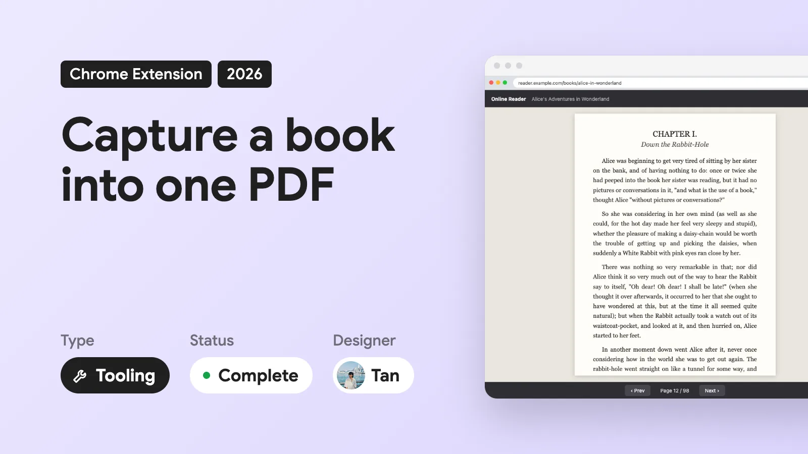
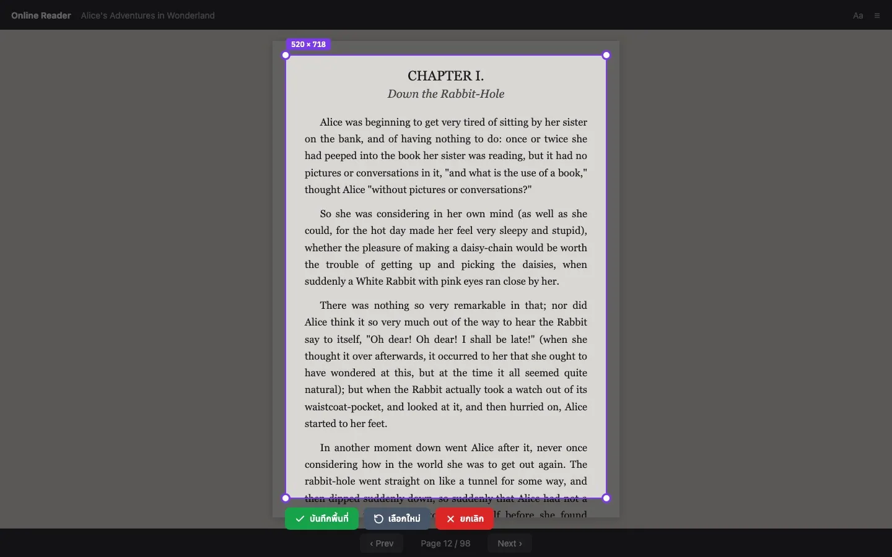
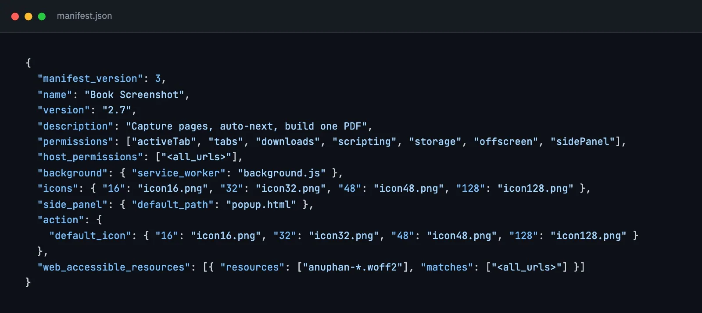
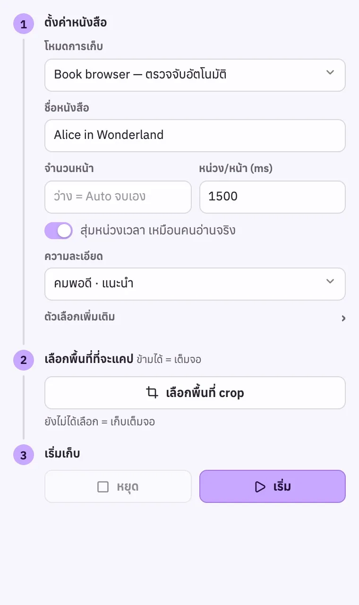
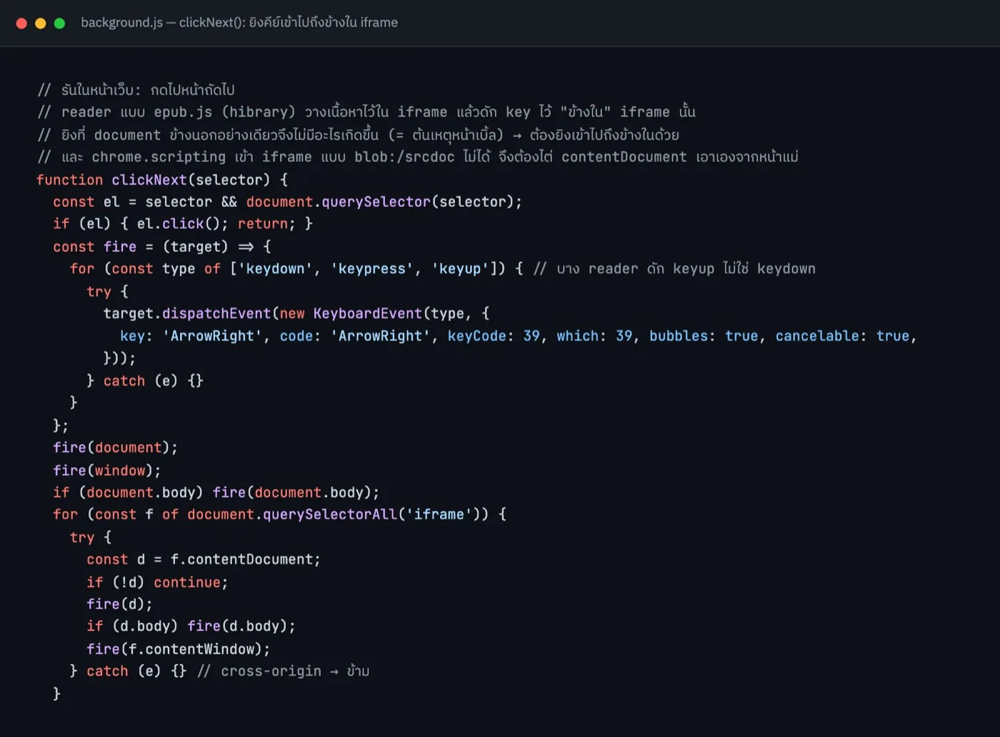
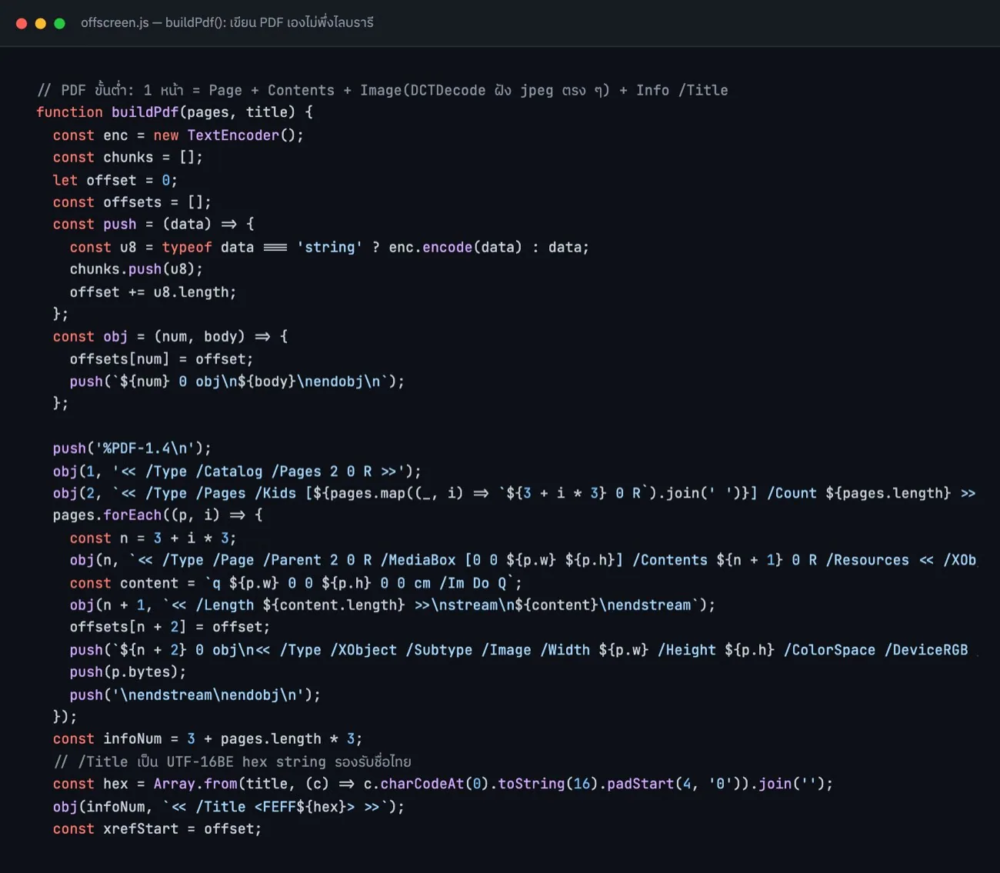

Book Screenshot — book captures → one PDF
A personal Chrome extension (Manifest V3) that turns three hundred manual captures, one page at a time, into set it up and leave it. It writes the PDF itself without a library, leaves no images on disk, sends nothing off the machine, and is for DRM-free content only.

A Chrome extension that turns the pages on its own, captures only what is actually visible on screen, checks for duplicate pages at two levels, then assembles a PDF in memory. It works with any kind of reader, from epub.js inside an iframe to Google Docs drawn onto a canvas.
The problem
Books read through a web viewer usually have no download button. Capturing them by hand, page by page, is not just tiring. It produces files you can't use.

I tried capturing by hand first. I ended up with 300-plus images piled on the desktop, with duplicate pages and missing pages, because pressing the right arrow didn't always make the reader turn the page. Then I still had to sort them and merge them into a PDF myself. A ten-minute job took the whole evening.
The reader lives in an iframe, so the DOM is out of reach
Readers like epub.js put the content in a blob: / srcdoc iframe that an extension can't read directly. Tools that work by pulling text out of the DOM simply don't work here.
Pressing next doesn't always turn the page
In some readers the right arrow scrolls down one screen instead of moving to the next section. Sometimes the page hasn't finished loading. The result is the same page captured twice, or content skipped without noticing.
Hundreds of images to merge by hand
Capturing is only half the job. The images still need sorting, cropping, compressing and merging into a PDF, and meanwhile the originals are scattered all over the disk.
A document hundreds of screens long kills the tab
For documents captured one screen at a time, holding every image in memory until the end means RAM grows until the tab crashes before you get a file.
Some books are off-limits
Library apps with DRM capture as black images, and some viewers embed a forensic watermark with the account owner's email on every page. These two cases aren't technical problems. They are a line to stop at.
The solution
Stop trying to understand each reader's structure. Work at the one layer every reader shares: "the image on screen".

Capture what the eye sees, not the DOM
captureVisibleTab takes a screenshot of the visible tab, just like pressing the screenshot key. Whether the reader is an iframe, a canvas, epub.js or anything else, it can be captured the same way, because they all end up as pixels on the same screen.
Check "did the page really change?" with two-level signatures
A screen-level signature (scroll position + text) is used when the reader scrolls on its own. A section-level signature (text only) is used when we do the scrolling. Different modes need different levels, or you get a whole section of duplicate pages.
4 capture modes for every page shape
Single page · long scroll as one continuous image · long scroll split into equal pages · one long document with no next button (Google Docs / single-page web novels)
PDF assembled in memory, no leftover files
Every page is kept as jpeg bytes in an offscreen document, and the PDF is written by hand with DCTDecode (the jpeg is embedded as-is, with no decode and re-encode). The result is a single file, with no images left on disk.
Select the area, then confirm by eye
Drag a frame on the actual page, adjust it with four corner handles, hold Shift to lock a square or an axis, and the popup comes back with a preview card showing the real size. You can see whether the crop is right before starting.
How it works — 4 steps
The popup is a vertical wizard. Follow steps 1 → 2 → 3, then let it capture on its own.

Set up the book
Choose a capture mode, enter the title, the page count (leave blank to capture until the end) and the resolution
Select the area
Drag a frame around the content only, cut out the reader's toolbars, and check the preview
Let it capture
Capture → check the page really changed → press next → repeat, with randomized page-turn timing like a human reader
Get the PDF
All pages are bound into one file with the title and downloaded automatically. Stopping midway still gives you a file.
Tech Stack & Architecture
Pure Manifest V3: no backend, no build step, no PDF library

A service worker in MV3 has no DOM, so it can't use canvas at all. But all the work here is cropping, resizing and binding images into pages, which needs a canvas. An Offscreen Document is an invisible HTML page the extension keeps open as a dedicated image workroom, so it can crop images and assemble the PDF without opening a visible tab.
What I built — 8 core capabilities
The full loop, from selecting the area to a PDF that's ready to read

4 capture modes
Single page / continuous long scroll / long scroll split into equal pages / one long document with no next button
Two-layer duplicate-page detector
The first layer compares the top of the image byte for byte (no false positives). The second compares text signatures, in case the image shifts slightly but the content is the same.
goNext — press until the page really changes
It doesn't press once and trust it. It keeps pressing until the content signature changes, which means a new section. If nothing changes at all, the book is finished.
Hand-written PDF writer
No library. It writes the PDF objects directly, embeds jpeg with DCTDecode, and stores Thai titles in /Title as UTF-16BE.
Bind as it goes, free up RAM
Long documents are bound into PDF pages every 8 screens, then the bitmaps are released. The number on the badge is the real PDF page count, not the screen count.
Google Docs mode
Reads the real paper edges from the DOM, scrolls so the top of each page meets the top edge, and captures a full page in one shot. No grey gaps, no crop to select.
Crop overlay + preview
Four corner handles, drag the middle to move, Shift to lock a square or an axis, then it comes back with a thumbnail and the real size
phone-capture.sh
A script does the same job on Android through adb: swipe the page, capture, compress, and merge into a titled PDF
The popup
A paper theme in OKLCH purple. Everything happens on one screen, with no hidden settings page.


Hacks and problems
7 problems that came up with real books. Almost all of them showed up as "some books work, some don't".

Pressing the right arrow does nothing
Readers like epub.js put the content in an iframe and listen for keyboard events inside it, so keys fired at the outer document have no effect. This was the real cause of the duplicate pages.
chrome.scripting can't enter blob:/srcdoc iframes → walk contentDocument from the parent page manually and dispatch the event directly.1 unit of scrollTop is not 1 pixel on screen
Readers that zoom with CSS transform make a box look bigger or smaller than its real layout size. Scrolling by the layout numbers alone overshoots (missing content) or undershoots (duplicate content), depending on each book's zoom level.
The page quietly moves its own scroll while waiting
Scroll to 1200 and wait for the delay. Meanwhile the reader lazy-loads more content and shifts the scroll itself, so the capture isn't at the position requested, and every overlap trim is wrong.
Image-only pages have zero characters of text
At first I found the content box by counting characters. With scanned-image books the content box has zero characters, so it wasn't found, and the fallback guessed the biggest box = the wrong box every time.
A hundred-screen document kills the tab before the file is ready
Keeping every screen's bitmap until binding at the end meant that on a really long document RAM grew until the tab was killed, leaving nothing.
Blank pages appear in the middle of reading
Binding midway every 8 screens closed off the leftover tail that didn't fill a page as a page of its own, so a nearly blank page appeared at every bind, like a misprinted book.
final=false (bind only to free RAM) from final=true (actually close the book). The leftover tail of a batch must always carry over to the start of the next batch, never be closed off as a page.Google Docs is "settled" but hasn't finished drawing
The settle check watched scrollTop/scrollHeight, which had stopped changing. But Docs renders virtualized and hadn't finished drawing the text yet, so a capture at that moment gave a white page.
captureVisibleTab quota of about 2 calls per second.Scope I chose not to cover
The hardest decision in this project wasn't code. It was the line I chose not to cross.

Along the way I hit two cases where I stopped and went no further. A library app that sets FLAG_SECURE captures only as black images, which is the content owner saying clearly that capture isn't allowed. Another web viewer layered its content against capture and embedded a forensic watermark with the account owner's email on every page. Both had technical workarounds, but working around them means bypassing measures someone put there on purpose. So the tool states plainly that it is for DRM-free content only.
No DRM bypass
Hit a protection measure = stop, no workaround
Only what is visible
No decryption, no pulling source files from the server
No leftover files
Images stay in memory until they become a PDF, then they're gone
Always a minimum delay
700ms + random timing, easy on both the quota and the server
Knowledge domains that got stronger
5 areas where my level actually went up through this project

I learned how the popup, the service worker and the offscreen document differ: which ones have a DOM, when each one dies, and why canvas work has to move to offscreen. Plus the limits of chrome.scripting, which can't enter some kinds of iframe. Lesson: MV3 forces you to be clear about where each piece of code runs.
I ran into all of it: modern sites don't draw everything up front. They draw only what's near the viewport, move the scroll on their own, and zoom with transforms until the coordinates you read don't match what you see. Lesson: don't trust the value you requested; trust the value you measure at the moment you use it.
I learned which objects a minimal PDF needs (Catalog / Pages / Page / Contents / XObject), that embedding jpeg with DCTDecode avoids decoding and re-encoding images, and that Thai metadata has to be a UTF-16BE hex string. Lesson: formats that look scary often have a much smaller core than you think.
I practiced designing a streaming pipeline: collect in batches, bind and release, carry the leftover tail to the next round. It's the same pattern as ordinary batch processing. Lesson: the "tab crashed" problem is solved by the order of work, not by compressing harder.
Choosing to stop at DRM meant writing the scope plainly in the README: what kind of content it works with. That turned out to be what makes the tool easy to explain and comfortable to use. Lesson: a tool with no limits isn't more powerful. It's a tool nobody dares to use.